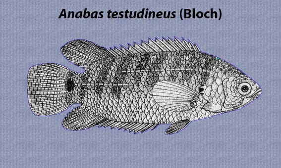

|
DIGITISED INVENTORY OF FRESHWATER FINFISHES AND SHELL FISHES OF INDIA |
Anabas testudineus
Taxonomic
Details
----- Valid Name
----- Classification
----- Synonyms
----- Common Names
Other
Biological Details
----- Habit and
Habitat
----- Morphological
Features
----- Reproductive
Biology
---------- Breeding
season
---------- Breeding techinique
---------- Fishing methods
----- Biology
Stages of development:
Economic
Importance
----- Uses
----- Parts Used
Economic potenial to the country
----- ----- Fishery statistics
Miscellaneous Information
Literature
Name : Anabas testudineus
(Bloch),1792

Family : Anabantidae
Classification:
Phylum: Chordata Subphylum: Vertebrata
Class: Actinopterygii Subclass:Neopterygii
Division: Teleostei Subdivision:Euteleostei
SuperOrder:Acanthopterygii Order:Perciformes
SubOrder :Anabantoidei Family:Anabantidae
Subfamily: N.A.
Synonyms: Amphiprion scansor Bloch
and Schneider,1801
Amphiprion testudineus (Bloch),1792
Anabas elongatus Reuvens,1895
Anabas macrocephalus Bleeker,1854
Anabas macrocephalus Károli,1882
Anabas microcephalus Bleeker,1857
Anabas scandens (Daldorff),1797
Anabas spinosus Gray,1834
Anabas testudinens (Bloch),1792
Anabas testudineus lacustri Das,1966
Anabas testudineus ricei Das,1966
Anabas testudineus riveri Das,1966
Anabas trifoliatus Kaup,1860
Anabas variegatus Bleeker,1851
Anthias testudineus Bloch,1792
Antias testudineus (Bloch),1792
Cojus cobujius Hamilton,1822
Lutjanus scandens (Daldorff),1797
Lutjanus testudo Lacepède,1802
Perca scandens Daldorff,1797
Sparus scandens (Daldorff),1797
Sparus testudineus (Bloch),1792
Common Names: N.A.
HABIT & HABITAT: Warm Water
Distribution : Fresh and Brackish water of India.
MORPHOLOGICAL FEATURES:Body elongate and moderately deep, its depth 3 to 3.5 times in standard length. Snout length 13 to 17.5 times in standard length. Mouth fairly large; teeth villiform on jaws. Scales large, 21 to 29 in lateral series.
REPRODUCTIVE BIOLOGY:. A. testudineus is bisexual. Sexual dimorphsim are observed generally with the approach of the breeding season. Mookerjee and Mazumdar (1946b) marked the sexual differences on the basis of the body and fin colourations. The femalekoi from West Bengal waters puts on a lightbrown colour on the body and fins, particularly the pelvics which turn deep brown during breeding season. This colouration, which indicates the ripening of the ova, appears during pre-spawning sesason and gradually disappears after spawning. Mature males acquire glazy black colour during breeding season. Dehadrai et al. (1973b), whereas, mark out the colour of the mature males of Bihar stock as reddish hue on the body, particularly on the pectoral and ventral fins, while females do not have reddish hue, though faint. Banerji and Prasad (1974) reported that the colour difference as given by Mookerjee and Mazumdar (1946b) ha.5 not been noticed in any of the specimens examined from Bihar waters. However, colour pattern differs considerably in different localities. Therefore, the differentiating contrasting secondary sexual characters are more dependable for sex identification.
Breeding season:A. testudineus is seasonal breeder, with long period of breeding. The spawning occurs once in a year. The spawning season in different localities of India and Bangladesh is commenced from April and extended to October, and in Indonesia from December to May (De, 1910; Anon, 1951; Hora and Pillay, 1962). In Sri Lanka, the egg- laden fish is found in January
Breeding techinique:No natural or artificial hybridization of koi has been reported so far.
Fishing methods:Fishing with hand by groping into the mud, by using plunge baskets to trap the fish in liquid mud of almost dried pond or by employing cast/drag nets, hooks and lines with baits in perennial waters are generally practised for commercial catch. Grass-hoppers larvae and pupae of red ants form the good baits. The use of , Barra" for catching koi is also popular in West Bengal.
BIOLOGY:N.A.
Stages of development:The development features of the fertilised egg and the larva of. etai., 1981) are as follows: Fertilised eggs 2-celled stage 4-celled stage 8-celled stage 16-celled stage 32-celled stage Many celled stage, looking like cauliflower.
3 hr 00 min Cauliflower like appearance lost as the cells spread out.
4 " 00" Morula stage, blastoderm extends over more than half of the yolk mass. 4 " 45" B]astoderm spreads out over 3/4th of the yolk-mass. 9 " 00" yolk-plug stage, yolk invasion nearly complete. 10 " 00 " Formation of embryonic ridge.
10 " 30" Differentiation of head and tail ends of the embryonic ridge. ]2 " 00" 8-somite stage
]2 " 30" 12-somite stage
12 " 45" 16-somite stage, optic cups appeared, Kupfer's vesicle formed.
13 " 15 " Pigments appeared, tail moves and getting detached from the yolk.
14 " 20" Pigments increased on the nape, fin-fold expands, 1/3rd of the tail detached from the yolk. Tail moves
faster.
15 ., 00 " Pigments develop on ventro-lateral region, otocysts appeared. 16 " 00" Embryo exhibits jerking movements.
17 " 30" Egg membrane weakens, heart pulsates at 148-160 bpm. 18 " 30 " Larva hatched out.
The period of incubation varies widely with variation of temperature. It was 18Y2-20 hrs at 83°F in majority of the cases (Mookerjee and Mazumdar, I 946b); 24 hrs at 27-30oc (Chaudhuri, 1969) and 24 hrs at 28°C (Hora and Pillay, 1962).
Newly hatched larva (Fig. 38 b). Total length, 1.9 to 2.3 mm. Body transparent, with round pigments on the head and scattered stellate pigments on the yolk-sac. Mouth yet to appear. Heart pulsation at 120 bpm. Larva rests in upside- down position with the yolk-sac directed upwards at the water surface, but with slight disturbance it moves down to mid- water and swims in the same inverted position till it returns to the water surface.
Larva,6-hour-old. Total length, 2.0 mm. Patches of pigments prominent at nape, above eyes and in front of it. No pigments on fin-fold. Mouth slit-like and inferior in position.
Larva, 9-hour-old. Larva further elongates. Eye lens appear as tiny globules. Pits to form otocysts deepen. Pectoral buds appear. Otoliths visible. Continuous fin-fold conspicuous and broadens.
Larva, I2-hour-old. Eyes become more pigmented. 2-chambered heart enclosing with pericardium noticeable. Blood greenish yellow in colour.
Larva, IS-hour-old. Total length, 2.5 mm. Pectorals flap-like. Otocysts constricted. Narial appertures formed. Larva,20-hour-old. Total length between 2.5 and 3.0 mm. Gall bladder formed.
Larva, I-day-old. Total length 3.0 mm. Larva appears translucent. Black melanophores extend to the ventro-lateral region. Yolk-mass greatly reduced. Mouth elliptical, lower jaw moves occassionally. Gills look like combs. Operculum membranous. Formation of air-bladder indicated. Pectorals franged, broad and more or less paddle-shaped.
Larva, 2-day-old. Yolk-sac reduced to a tube. Mouth terminal in position, with slit-like opening. Lower jaw moves briskly. Air-bladder round, small and silvery white in colour. Larva orients its body in the normal upright position and wanders in the mid-water as well as at the bottom.
Larva, 3-day old (Fig. 38C). Total length 3.5 mm. Mouth opening markedly enlarged. Gill filament prominent. Yolk almost absorbed. Pectorals with rudiment of rays.
Postlarva,S-day-old. Total length 6 mm. Yolk-sac completely absorbed. Eyes conspicuous, deeply pigmented. Head becomes considerably enlarged. Opercular bones differentiating. Vertical column deflecting upward at tail-end. Stomach region tends to grow saggy. Nine rudimentary rays appear in caudal fin.
Postlarva, 10-day-old. Total length 9 mm. Dorsal fin differentiated with 18 spines and 9 soft rays. Caudal fin shows II distinct rays. Scales appeared. 7 vertical bands on the body and a black blotch near the base of the caudal peduncle develop., Aerial respiration manifests after the attainment of about 10 mm size.
Uses: This
is a very hardy fish and is of considerable fisheries interest.In its natural
habitat this fish can propel itself over dry land for great distances at a
stretch by 'walking' on its 'walking fins'. Despite its moderate size, fish is
regarded as a highly esteemed fish for its fine flavour, restorative values and
prolonged freshness out of water. The fish is suitable for cultivation in ponds,
reservoirs and rice fields.It also forms a good component for culture in carp
ponds.
Economic
potential to the country It is caught mainly from low lying swamps and
marshy tracts as well as derelict pits, pools and puddles which remain in the
process of drying up during summer months. It is also caught during rainy
weather when it remains in the process of prowling about on wetland.It can be
cultured single or in combination with Clarias batrachus and Heteropneustes
tossilis. The stocking material of the fish can be had by raising the young ones
produced through induced breeding. Collection of seed from nature is rather
difficult in the absence of any worthwhile technique for mass-scale collection.
It attains a length of 25 em or more in the wild. Talwar and Jhingran Inland
Fisheries vol. 2 Pg.997
Parts Used: